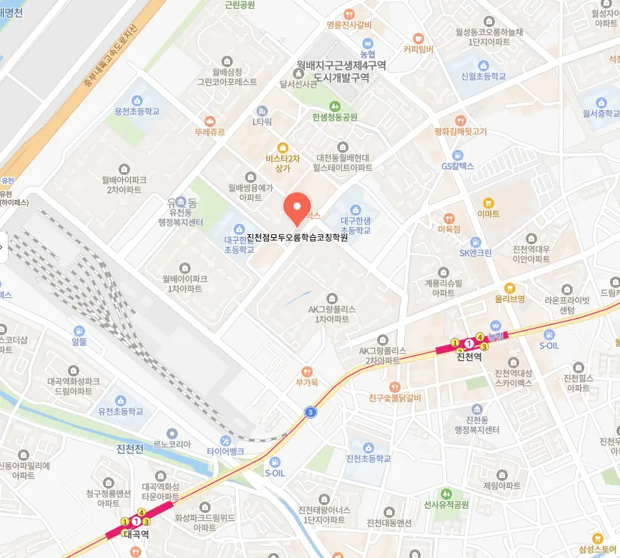

대구유천동 소규모학원
대구유천동 소규모학원
사고의 깊이가 감정과 연결될 때, 학습은 단순한 수행을 넘어 개인의 성장으로 이어진다. 대구유천동 소규모학원은 예컨대, 하루 세 번씩 체크리스트를 점검하며 진도와 성취도를 비교하고, 복습 내용은 반드시 손으로 써서 감각적 기억으로 각인시키며, 매주 말에는 AI 기반 복습 준비율 분석을 통해 ‘잊혀질 위험이 있는 개념’을 자동으로 추려내어 재정리하는 습관을 갖추는 것이 도움이 된다. 결국 지식의 단순 재현이 아니라, 그 기저에 깔린 논리 구조를 스스로 질문하고 재구성하는 훈련이, 장기적으로 문제 해결의 핵심 전략이 됩니다. 대구유천동 소규모학원은 자율학습실의 벽면에 걸린 누적 복습 차트를 통해 학습한 내용을 시각적으로 되짚으면서 반복의 리듬을 스스로 조절할 수 있다면, 단기기억에서 장기기억으로의 전환 효율이 높아진다. 수업의 흐름을 마무리할 때 학생이 스스로 만들어낸 질문을 중심으로 정리하는 방식으로 전환하면, 학습의 주도권이 학생에게로 이동하게 된다. 이 챌린지의 핵심은 단순한 양적 소화가 아니라, 풀이 후 구술 오답노트를 작성하는 것이다. 실제로 사회 과목에서 69점에서 91점으로 점수를 끌어올린 학생은 논점 중심의 정리 방식을 도입한 결과를 얻었으며, 이는 정보의 난잡한 나열이 아니라 ‘이 주제의 핵심 쟁점은 무엇인가’를 스스로 묻는 태도의 전환에서 비롯된 성과입니다.